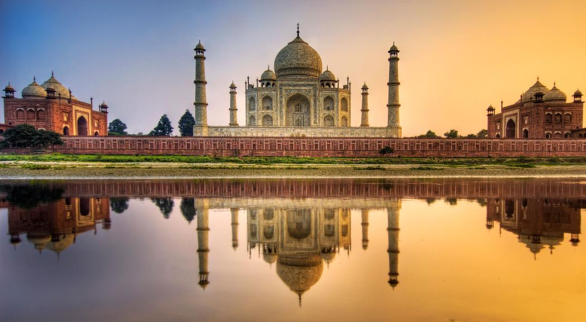

Индия
Индия – огромная страна в Южной Азии с разнообразным рельефом: на ее территории расположены как горные вершины Гималаев, так и побережье Индийского океана. История страны насчитывает пять тысячелетий. На севере Индии сохранились архитектурные памятники эпохи Великих Моголов, в том числе Красный форт и мечеть Джами-Масджид (Соборная мечеть) в Дели и мавзолей Тадж-Махал в Агре. Город Варанаси известен как место паломничества индуистов, которые совершают омовение в Ганге, а Ришикеш – как центр йоги и отправная точка для походов в Гималаи.
Соединенные Штаты Америки
Соединенные Штаты Америки – государство, состоящее из 50 штатов, занимает значительную часть Северной Америки. Штат Аляска расположен на северо-западе континента, а Гавайи – в Тихом океане. К крупным городам атлантического побережья относятся Нью-Йорк и столица Вашингтон. К западу от них находится ещё один важный город – Чикаго, известный своей впечатляющей архитектурой. А на западном побережье расположен Лос-Анджелес со знаменитыми голливудскими киностудиями.